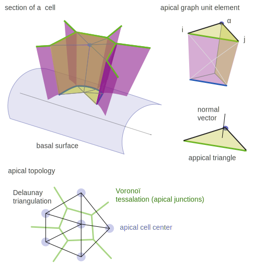
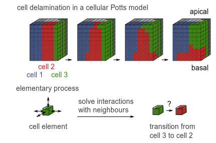
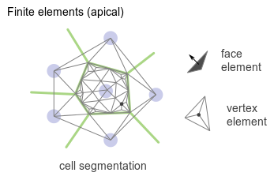

Ce texte est un travail en cours. N’hésitez pas à commenter ci-dessous pour m’aider à l’améliorer. J’essaierai peu à peu de sortir du style télégraphique.
Comparaison des différentes classes de modèles de tissus
Basé principalement sur la revue de L.A. Davidson et al. / Journal of Biomechanics 43 (2010) 63–70
L.A Davidson et ses collègues distinguent trois grandes classes de modèles:
- Modèle de Potts cellulaire
- Modèles de type vertex
- Modèle en éléments finis
Modèles de type vertex
C’est le modèle utilisé actuellement pour les simulations de formation du pli.

Aspects positifs:
- Facile à saisir et à implémenter (peu de paramètres)
- Relation très directe image \(\leftrightarrow\) simulation
- Adapté pour l’organisation appicale de cellules épithéliales jointives
- Adapté à des topologies dynamiques
Aspects négatifs:
- Limité à des cellules jointives: pas de délamination, par exemple.
- Tout se passe au niveau des jonctions.
- Peu adapté à la prise en compte des événements baso-latéraux.
- Difficile d’inclure des interactions hors du maillage.
- Physique peu détaillée.
Modèle de Potts cellulaire
Dans cette classe de modèles, l’espace est divisé en cubes de taille petite devant la taille des cellules. Chaque cube est assigné à une cellule, et on minimise une énergie sur les faces des cubes, en fonction de leur voisinage (intra-cellulaire / interface). On peut l’envisager comme un système multi-agents.
Aspects positifs:
- De nombreuses implémentations existent déjà, facile à mettre en œuvre
- Adapté à la modélisation de la migration cellulaire dans des approches en termes de populations de cellules.
- Grande souplesse dans la modélisation des intéractions
Aspects négatifs:
- Mal adapté à des géométries complexes
- Mal adapté à la modélisation des interfaces
- “Loin” des détails bio-physiques des intéractions cellule-cellule
- Grande souplesse dans la modélisation des intéractions

Méthodes par éléments finis
C’est la discrétisation d’un système d’équations continues dans l’espace. Dans le cas de la modélisation d’une couche, apicale par exemple, la discrétisation est effectuée en découpant le tissu en faces triangulaires.
Le maillage est plus fin que dans le modèle vertex. Contrairement au modèle de Potts, il est adaptable, de manière à décrire plus finement le milieu au voisinage des points de forte variations, par example aux interfaces cellule - cellule.
Aspects positifs:
- Adapté aux problèmes continus
- Fidélité à la géométrie
- Proximité avec la réalité biophysique du tissu
Aspects négatifs:
- Gourmant en temps de calcul (et en temps d’optimisation)
- La segementation n’est pas triviale (maillage régulier ou adaptatif, etc.)

Reste à aborder:
- Détailler la physique des méthodes en milieu continu
- Inclure des exemples pour chaque méthode
- Rédiger une introduction
Comments
comments powered by Disqus